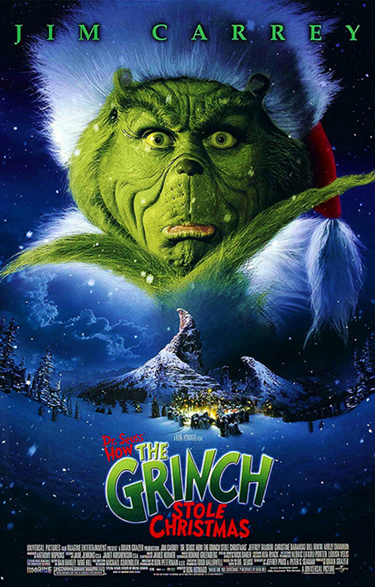
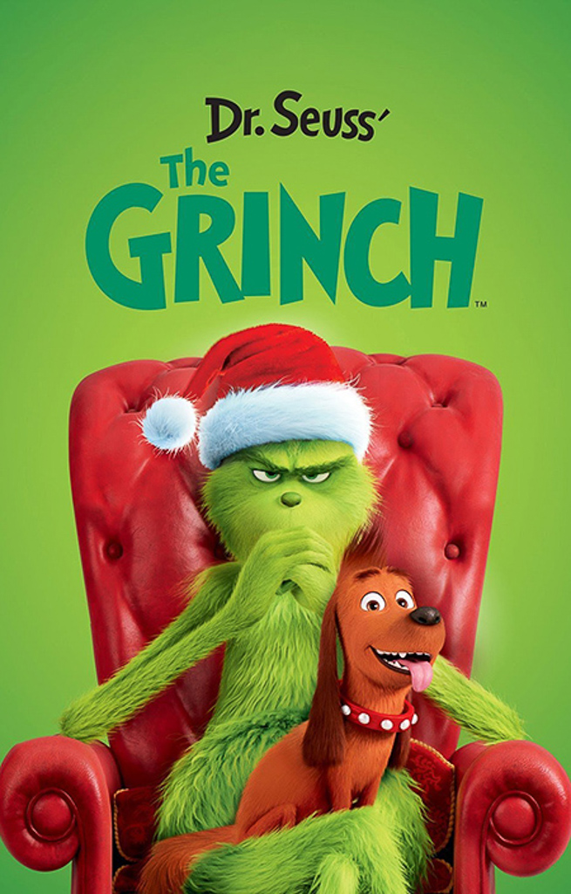
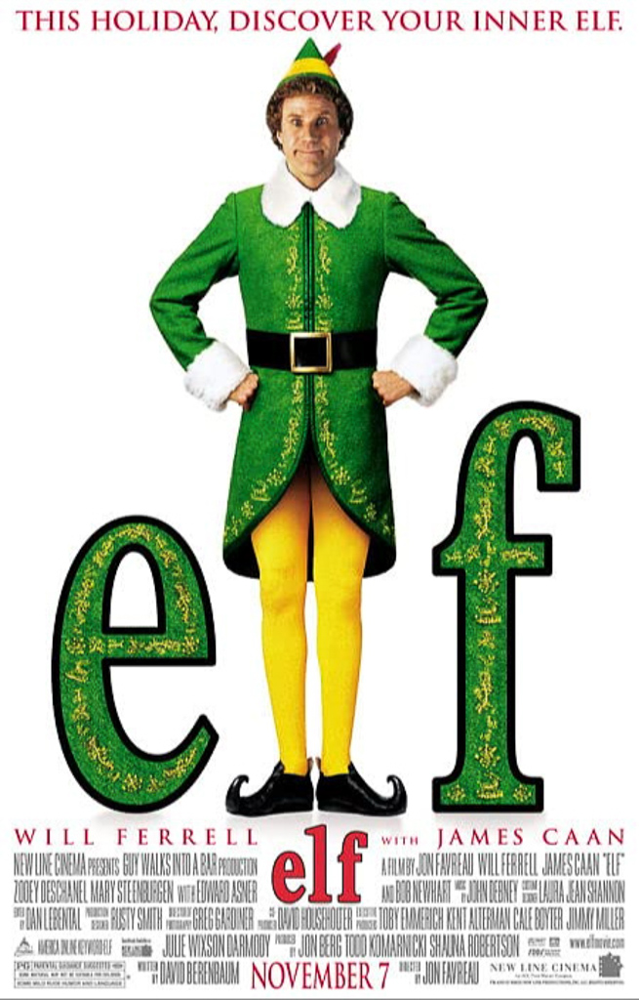
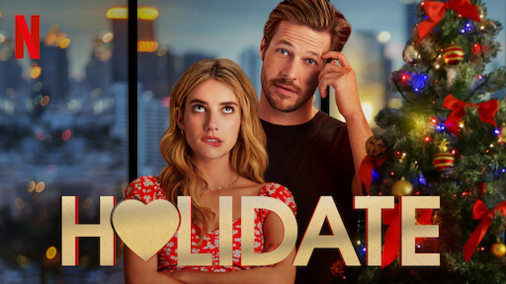
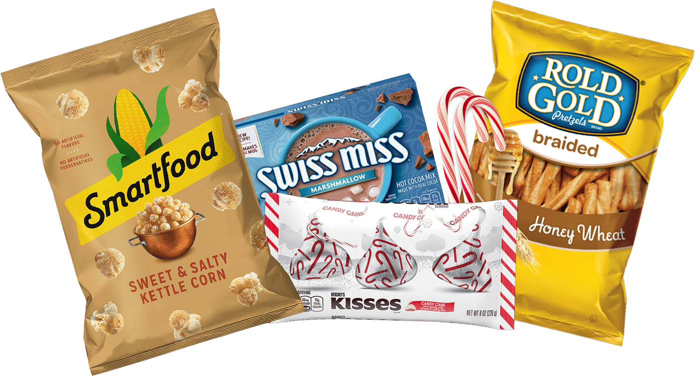

Holiday Movie Nights
Dec 6 - Written by Bonnie and Emily
As the weather gets colder and the days until Christmas get closer, it's that time of year for holiday movies.
From the classics to the Netflix holiday movies, there are countless options out there to fill up your nights with holiday cheer! Gather your friends and family virtually or in person for a great cozy night of holiday classics and some delicious snacks to warm up everyone’s hearts.
Movies
Classics



You can’t go wrong with watching childhood favorites like The Grinch and Elf. The Grinch is one of those movies that most people are familiar with and it used to always play on TV every year back when cable was more common. Whether you’re more into the classic version or the newer animated version, this is one of those movies worth watching for the nostalgic vibes. Elf may not be the type of classic holiday movie you think of but it's a classic for us. Growing up, this was a favorite to watch during the holiday season because of the comedic journey the main character goes on to find his real father after growing up in the North Pole among Santa’s elves. No matter which movie you choose to watch, it’ll surely get you into the Christmas spirit.
Netflix Holiday Movies
Every year Netflix releases their annual collection of holiday movies and this year was no different! The Netflix holiday collection is full of family friendly movies and are great for any time of the day to watch! A few of our favorites that were released this year include The Holidate and The Princess Switch Switched Again.


The Holidate isn’t quite a Christmas holiday movie but it’s a fun romcom that focuses on all the holidays in a year. If you’re looking for a cheesy feel-good movie, you should definitely give this movie a try. This may not be some people’s favorite Netflix holiday movie but it definitely fits the oh so famous bad holiday genre that always provides some great laughs and holiday cheer to any audience.
The Princess Switch Switched Again is the second movie in The Princess Switch series, and if you haven’t done so already, we definitely suggest watching both movies in the series--they’re both fantastic and there may also be some major spoilers if you haven’t seen the first movie yet. We don’t want to give away too much, but this movie is filled with love, christmas joy, and mischief as the main characters pull off another epic switch. The Princess Switch is totally one of our favorite holiday movies and we can’t wait to see the third one in the series next year!
Movie Essentials
Of course you can’t have a movie night without some yummy and cozy essentials to bring those holiday vibes to your movie watching spot! Depending on where you and your friends and family may be, we’ve gathered a few things that can be collected individually for that Zoom movie get together or in person as a group!
To set up that holiday vibe in the house, you must bring some of those cozy blankets and extra pillows to your couch or bed to get extra comfy and warm or for snuggling and comfort! If you’re feeling extra fancy you could also hang up some string lights around the couch or bed for some extra festiveness, we picked up these reindeer string lights at Primark that brought some extra Christmas cheer. For a bonus essential that we love to include in our house all month long--Netflix’s hour long virtual fireplace! (Or your own actual fireplace if you have one). It just gives that warm fuzzy feeling that will keep you burritoed up in your blankets all day long.
Now that we’ve talked so much about setting up your movie spot, we would never forget about the movie munchies! Snacks are always a major essential to a good movie sesion. Some of our favorite snacks and drinks to bring during this holiday season include hot chocolate (little marshmallows sprinkled on top is a must for Bonnie) and one of our favorite sweet snacks to go along with this is some kettle corn--we typically buy Smartfood’s kettle corn that is easy to find and delicious! You can also buy some candy canes early in the month to eat while watching and if you really enjoy candy canes, you should give the candy cane Hershey’s kisses a try for the best fusion of chocolatey and minty flavors. If you’re a savory snacker you can have some of our favorite snacks like honey braided pretzel sticks or a recent favorite of ours after acquiring our own popcorn maker is making our own popcorn with plenty of salt and butter for the classic movie theatre vibe.